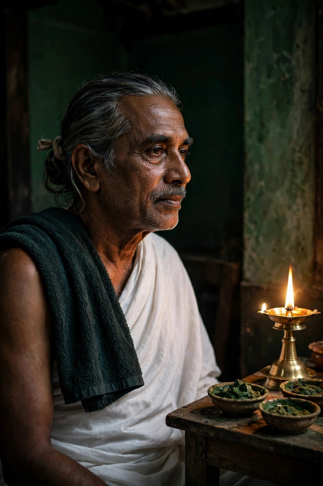
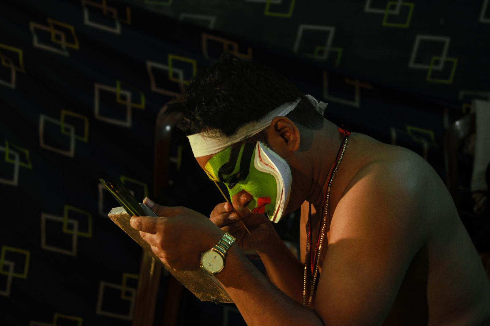

About · The man before the face
Fourteen years learning to be looked at.

I was nine when I was first stood in front of a kalari lamp in Ottapalam and told to hold a posture until my legs shook. Kathakali training begins with the body — years of cholliyattam, the spoken-beat exercises, the eye movements practised until the eyes can hold a courtyard — long before a boy is allowed near the green paint. I trained fourteen years before my guru let me play a full night.
My guru I call Raman Asan on this page. The name is invented — my real teacher's name belongs to his family, not to my advertising — but the debt is real, and so is everything he beat into me: that the hands must never hurry, that a villain is played from his pride and not his cruelty, and that the last hour of the night, when the courtyard is tired and the story turns, is the hour the actor is actually for.
People photograph the crown. The crown is the easy part. Watch the eyes. A Kathakali actor tells you the story with his eyes a full breath before his feet move, and if you learn to read them you will never again need the printed synopsis. It took me a decade to make my eyes that honest. It is the only thing I am vain about.
Off season, from June to October, I teach two students, repair the troupe's crowns and skirts, and argue with committees about dates. The portrait beside this page shows me as I am at four in the afternoon on a performance day: no paint yet, the lamp lit, the green already ground. (The portrait is an AI-generated likeness made for this fictional portfolio — the reasoning is in the footer.)
The make-up chair · Pacha vesha, for a 9 PM start
Four hours, in order. Nothing here can be hurried.

The sitting
I lie back in the chair in the green room and give my face away. From here until the story ends I do not eat, and after the mouth is painted I do not speak — the troupe learns to read my eyebrows early in the season.
The green
The pacha base — pigment ground fresh and worked with coconut oil — is laid over the whole face, then bordered: black at the eyes and brows, white along the jaw's edge. A rushed green dries patchy by midnight and the character quite literally fades.
The chutti
The white beard-frame is built around my jaw from rice paste and strips of paper, layer on layer, each layer left to set. It is the part photographs love and the part that decides whether I can move my jaw freely at three in the morning.
The eyes
The eyes are lined out long, and reddened in the old way — a chunda seed rested under the lid — so the whites carry the lamplight. Then the crown is tied, the great skirt is built over padded legs, and the ankle bells go on last.
The lamp
The brass stage lamp is lit in the courtyard. Whatever has gone wrong in the chair — a cracked chutti, a torn strap — stops mattering. The drums have already decided.
How a night is built · For committees
What you provide, and what we bring.
We bring nine to fifteen people, the crowns, the skirts, the curtain and the drums. A committee provides a courtyard or hall, a green room near it where a man can lie in a chair for four hours, water, one meal for the troupe, and oil for the lamp. Everything else — including the patience — is ours.
Kelikottu
The drums announce the night to the whole village. If your grandfather is alive, this is the sound he will tell you he grew up inside.
Thodayam & purappadu
Opening dances, the characters first shown behind the hand-held curtain, lowered by degrees as the courtyard settles.
The story
The singers sing every line; the actors answer in hand, face and foot. Lines are spelled twice. Nobody is expected to sit the whole night — the courtyard breathes, people drift to the tea stall and return — but the story does not pause.
The washing off
Coconut oil takes the green off in twenty minutes. Fourteen years of training, four hours of paint, eight hours of story — twenty minutes to be a man with a towel again. I have never once found that sad.
Ask me anything about a night.
Committees write with practical questions — courtyards, rain plans, school groups, budgets. All of them are answered plainly, including the ones whose answer is no.